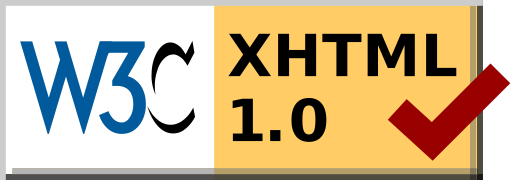

|
O mejor dicho... ¿Quién soy?
Soy un estudiante de 1º de DAW en I.E.S las Fuentezuelas que tomó la decisión de hacer su primer proyecto para matar dos pájaros de un tiro:
- Aprender el uso de cada una de las etiquetas, atributos y propiedades que el temario recoge sobre XHTML 1.0
- Elaborar una documentación (en principio para mí), y si resulta ser útil, para compartirla con más personas (estudiantes actuales y futuros del centro, independientes, aburridos, etc.)
Precisamente por esas dos razones en las que basé mi proyecto cree el logotipo 'DAW documentación', que diseñé inspirándome a través de uno de los logos utilizados por la W3C:

Prácticamente la totalidad de la documentación la he obtenido de dos fuentes: los apuntes de la asignatura y de uno de los libros didácticos de LibrosWeb (que vienen a ser prácticamente lo mismo). Sólo algunos ejemplos son de mi coshecha. Eso sí, estoy hablando de contenidos, ya que TODO el markup, que no ha sido moco de pavo, lo he hecho a piñón con mi sudor, entusiasmo y muchas horas de dedicación.
Me habría gustado añadir más explicaciones y contenidos, sobre todo en lo referente a aquellas etiquetas/atributos/propiedades que están cayendo en desuso, que están desaprobadas en incluso las diferentes incompatibilidades o resultados en los diferentes navegadores. Sin embargo, ya de por sí este proyecto ha sido demasiado largo como para hacerlo yo sólo en el plazo de tiempo estipulado. Además, todas estas consideraciones cambian a una velocidad asombrosa, por lo que sería necesario un mantenimiento, y más personas.
No obstante, espero que os guste este proyecto, y disculpadme por los estilos, ya que la limitación de utilizar sólo XHTML sin estilos de CSS, se nota con creces (tanto en tiempo, como en resultados finales).
En cualquier caso, gracias por leerme y ¡un saludo!
|